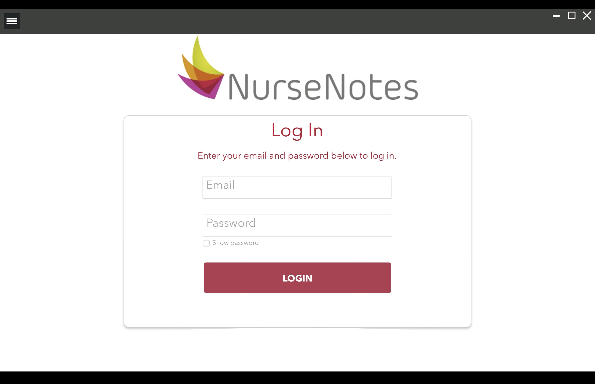
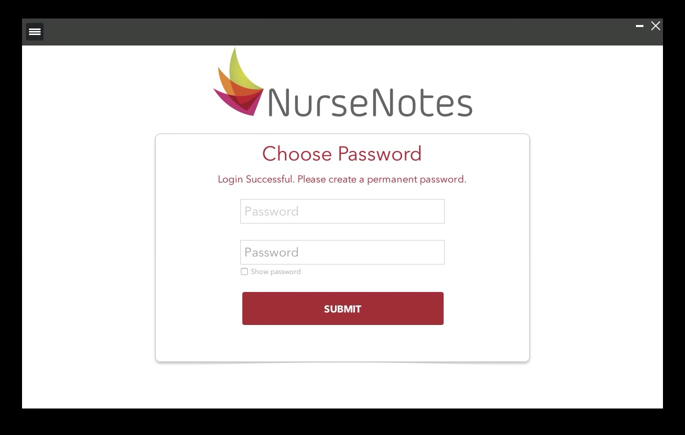
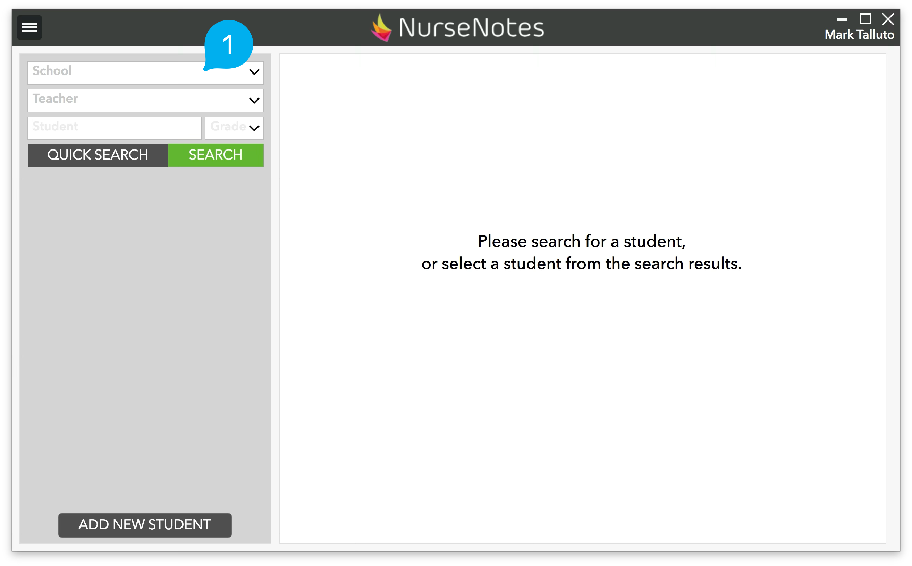
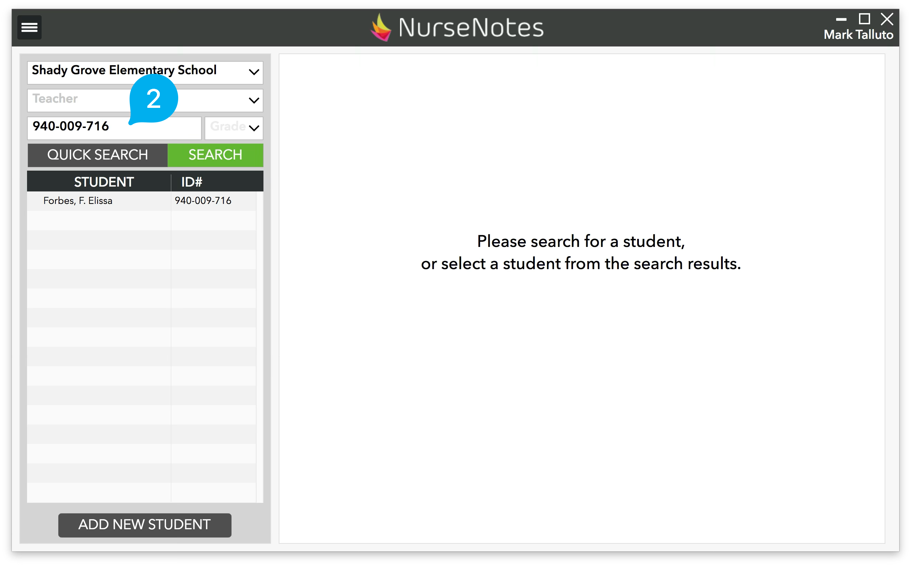
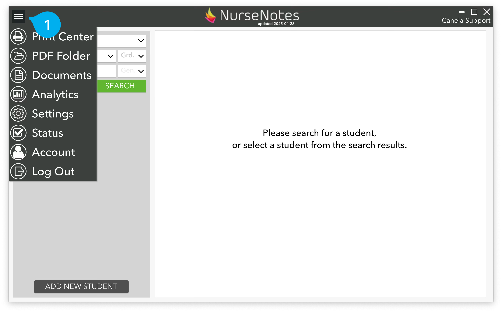
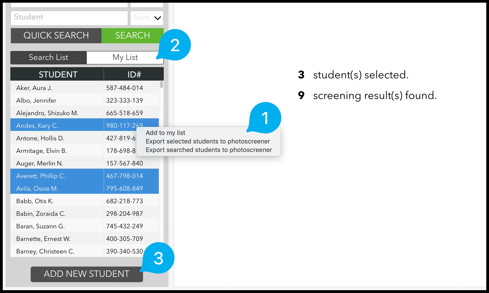
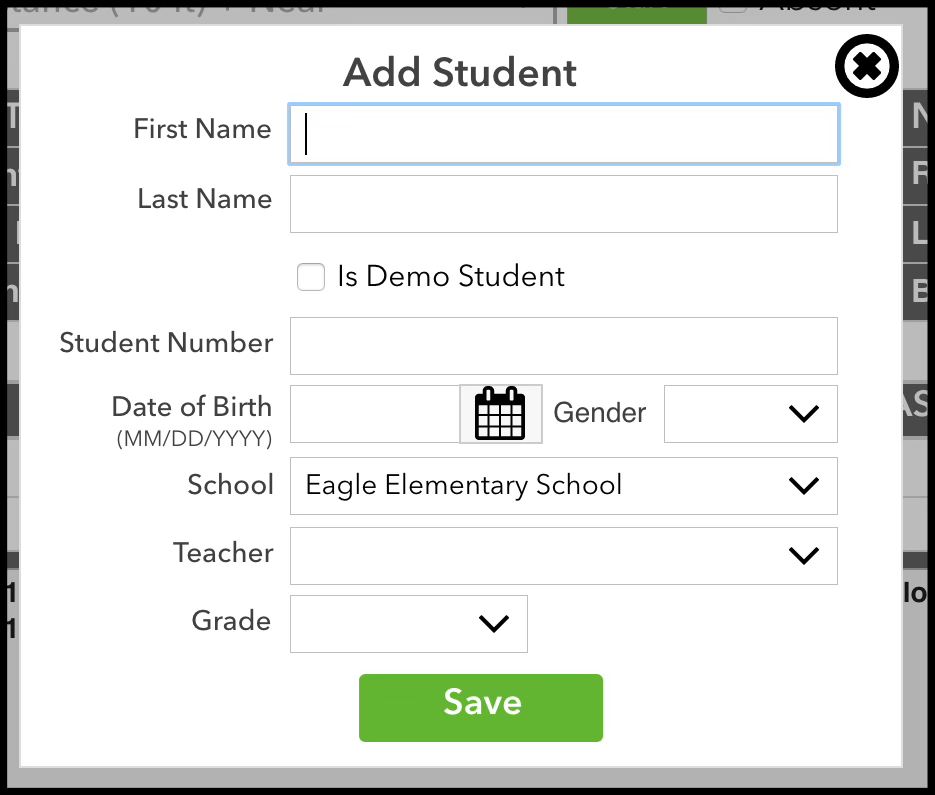
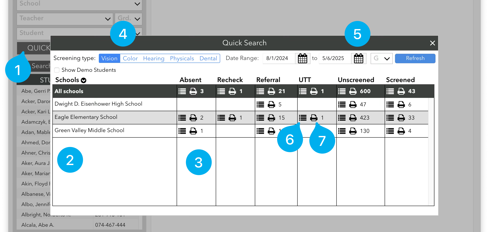
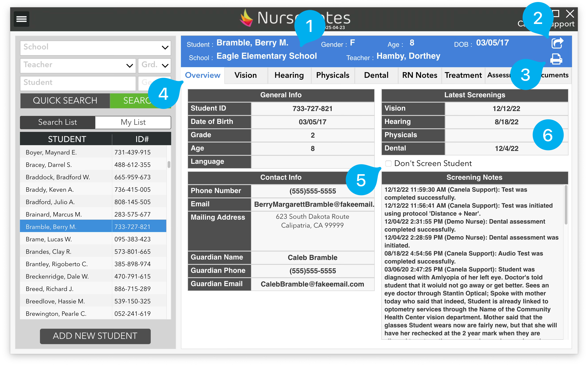

Getting Started¶
As part of the NurseNotes Training, Canela Support will install (or have your IT install) the NurseNotes Software package, which includes the NurseNotes Application as well as supporting programs and drivers.
To begin, double click on the NurseNotes icon on your desktop.
This will launch the NurseNotes application. If this is your first time running the program, you may see a page asking you to register or log in. Click the Register button, and follow the instructions of your Canela Support team to register your computer. Once you’ve registered, your program will automatically update itself. This may take a few minutes the first time you use the program.
You should be given an account as part of your training. Normally, you will use your district email to log in.

The Login Screen¶
When you first open NurseNotes, you will see this login screen. Use your email and password to log in. If you’ve forgotten your password, give us a call or email us and our team will be happy to help. If this is your first time logging in, or if you forgot your password, you will have a chance to change your password on the next page:

The Home Screen¶

After logging in, you will see the “Home” screen. From this page, you can search for students, screen them, and view their previous screenings. Start by clicking in the school dropdown (1) at the top left of the screen. You will find all the schools here that you have access to. After selecting one, Click the SEARCH button to pull a list of the ENTIRE student population for that school site.

You can also select a teacher, a grade or search for a specific student by either NAME or STUDENT ID (2).

The Hamburger Menu is the main menu for navigating through NurseNotes. It can be found in the top left corner of the screen by clicking on the three lines (1). In this menu, you will find the Print Center, PDF Folder, Documents, Analytics, Settings, Status, Account, and the Logout button. The PDF folder is where printed forms get saved if you choose the “save to PDF” option. The Logout button will exit NurseNotes and take you back to the log in screen. The other options will take you to different screens — you can find more details about those screens later in this guide.
Student List¶

The student list will show your search results. Each student is listed alphabetically by last name, and also shows the student’s ID number. You can also select multiple students by holding shift or alt while clicking. If you right click (1), you can then choose to add those students to your list, so you can refer back to them in the future. You can switch to your list by clicking the “My List” button at the top of the student list (2). Finally, you can add new students, if there are any missing (3).
Adding Students¶
Generally speaking, you should be able to search for any student in NurseNotes. We integrate with your Student Information System (SIS) and get all new student data on a nightly basis. However, sometimes you’ll need to screen students that haven’t been given a student number yet, or that may not be registered with the district. In those cases, you can click the “Add New Student” button on the bottom of the home page.

This will bring up a pane where you can add in the student’s information. Try to fill as many fields as possible — this will make it easier to match up the student once they have been registered. If you select the “Is Demo Student” checkbox, the student’s screenings will not be counted when running reports and will never be uploaded to your SIS.
Quick Search¶

The Quick Search button (1) (next to the search button) will give you an overview of the district.
You will see a list of all schools (2), along with the number of students (3) that have been marked absent, recheck, referral, UTT, or that still need to be screened this year for each school. You can click on each column header to sort by that column.
You can choose between different screening types: Vision, Color, Hearing Physicals, or Dental (4). You can also choose a date range (5) and grade range to see the number of students referred or screened in a time period.
Besides seeing the number of students, you can also click the “list” icon (6) next to the number in order to show the students in NurseNotes. This way, you can quickly pull up a list of students to screen.
Finally, you can also print these results: Pressing the “printer” icon (7) next to the number of students will allow you to print either a list of students, or directly print referrals for those students.
Overview¶

Once you click on a student, you will see all their information on the right side of the screen. At the top of the screen, you will see a blue section (1) with the student’s name, gender, school and teacher. Note that Demo students will have an orange section, and students marked “Don’t screen” will show as pink. This information is always displayed so you have a quick reference while you are doing mass screenings. If you click the “Export” icon in the top right (2), you can export the student’s data in CSV format. If you click the “Print” icon (3), you can print documents for the student (see Printing).
If you click on the “Overview” tab (4), you will see some information about the student, including their Student ID, Grade, and Age, as well as any contact info (if it has been imported from your SIS). You can also mark them as “Don’t Screen” (5), which will prevent you from screening them during mass screenings. You will also see when their last screenings were done (6), so you know if you need to screen them again.